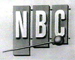

|
|
HOW IT BEGAN... The year was 1952. And Portland was still without its first television station. Long after all other large American cities were tuning in, Portland was the second-largest city in the United States to be without local TV (Denver, Colorado was the largest.) Then on August 25, 1952, the light turned green. In a lightning fast three week period, all construction, tests and operations were completed by new owners, The Empire Coil Company, to make KPTV a functioning television station. On September 20, 1952, at 4:30pm, KPTV aired its first telecast. It was a historic event, not only for Oregon, but for the world, because KPTV was the very first UHF, or Ultra High Frequency, station.
The Empire Coil Company was started in New Rochelle, New York, by Herbert Mayer in 1944 with five employees. Mayer was a New York City lawyer until World War II. He became involved in the electronics business to help the war effort and found that it was his great love. After VJ Day, the company began to manufacture radio coils and transformers. In 1949, Mayer bought and developed WXEL-TV, a VHF station in Cleveland, Ohio. In August 1952, Empire Coil purchased a two-and-one-half year old RCA experimental UHF station in Bridgeport Connecticut. The transmitter was dismantled and shipped fast freight and trucked to Portland, where it was reassembled by the same RCA engineers. All parts were coded and a day and night shift of workers aided in its installation, which was completed September 11. The 250-foot tower on Council Crest was begun on September 9th and completed on September 11th in time to receive the RCA Victor antenna. The first program was broadcast just 26 days after the ground was broken for the transmitter.
FIRST PROGRAMMING... KPTV signed on with a speech given by Herbert Mayer. The first program was a documentary about the experimental UHF transmitter, which became the KPTV transmitter. At 5:00pm, KPTV picked up NBC's "All Star Revue" with Jimmy Durante and Margaret Truman. At 5:30pm was "Your Show of Shows" with Sid Caesar and Imogene Coca. Sign off was at 7:30pm. On Sunday, September 21, sign-on was at 6:00pm with "Philco Television Playhouse," featuring "Five Fathers of Pepi" starring Jose Ferrer. Test signals were aired from 7:00-8:00pm and the movie "Meet John Doe" with Gary Cooper and Barbara Stanwyck aired from 8:00-10:10pm. Regular full scale programming began on October 1st with the World Series. The New York Yankees beat the Brooklyn Dodgers four games to three. KPTV used shows from all available network sources: NBC, CBS, ABC and DuMont. The DuMont Network was founded by Dr. Alan B. Dumont, who perfected the cathode ray tube. He introduced the first commercial televisions sets in 1939 and began the first television network with 66 stations. TV MANIA AND VIEWING HABITS...
TV mania swept the region. Meal hours found families ensconced in the living room. Etiquette columns urged consumers to purchase sets for the dining room to prevent families from eating in the front room. "Meals can be eaten properly and comfortably and Junior's bread crumbs and father's pie ala mode present no danger to expensive rugs," said an ad in the Oregonian newspaper. Non-TV set owners watched an average of 12 hours per week at others homes, and it was rumored that in some communities, babysitters snubbed non-set owners. Optometrists offered special TV watching glasses to prevent "telestrain" and viewers were advised to shift their gaze when viewing for long periods of time to prevent eye strain. In studies done at the time, two-thirds of those polled said they did less reading, and two-thirds did less visiting. Magazine reading decreased 25 percent as did patronage in bars and taverns. Television was known as "the poor-man's theater."
Because KPTV was a UHF station, new sets had to be modified at the factory. Dealers could not keep sets in stock and there were waiting lists of up to six months. Television sets were expensive by 1952 standards, with costs ranging from two to four hundred dollars. By February 28, 1953, 72,839 sets had been sold in the Portland Area. Primary coverage of KPTV extended about 20 miles. The population of Portland was approximately 750,000 in 1952. Some things haven't changed much since 1952. In November of that year, Mayer said "Some of the programs are downright improper for children. I don't let my own watch it too much. Sometimes I have to shut off the set and chase them out of the house on Saturday afternoon." 1952 PRESIDENTIAL ELECTION... Television brought a new political fire to the area with the first locally broadcast coverage of the Presidential election. In September 1952, KPTV aired Senator Richard Nixon's famous "Checkers" speech. The Presidential election between Dwight Eisenhower and Adlai Stevenson was November 4, 1952. This was the first election in the greater Portland area where voters became better acquainted with the candidates through the medium of television. In the months before the conventions, numerous candidates gobbled up every spare minute of TV time nationwide. Eisenhower and Stevenson were booked for 20 nationwide telecasts each before the election. Both men had excellent television personalities. Ike's first major televised speech ran overtime, and he was cut off in mid-sentence! ADVERTISING... After three weeks, KPTV air time was sold out with local commercials. No national spots were sold. Eight seconds of air time went for $17.50, one minute sold for $35 and 52 half-hour programs went for $127.50 each. Viewer polls showed that 24 percent of viewers preferred animated cartoon-type commercials. Only one percent preferred the pitchman-type commercials that advertisers thought would be perfect for the medium. NEW CAREERS... The industry spawned new careers for television engineers as well as television repairmen. The medium was so new that it was virtually impossible to hire people trained in the field. Portland bookseller, J.K. Gill stocked a large selection of technical books on the television service industry. Set owners were warned not to try to service their sets themselves because of dangerously high electrical voltage. PROUD AS A PEACOCK... As Portland's only television station, KPTV spent its first twelve months "cherry-picking" programs from NBC, CBS, ABC, DuMont... even the Mutual network. This proved especially helpful in the days before the broadcast studio was completed, as KPTV was able to air programs "out of pattern" (outside of their normal time slot) to fill hours during the day when a network did not provide any programming. A look at KPTV's Fall 1952 schedule reveals an NBC-heavy schedule, with several entries from CBS, a few syndicated programs, and one ABC entry. Thus, Portland viewers were treated to NBC's top entries, including "Milton Berle," "Red Skelton" and Sid Caesar's "Your Show of Shows," plus CBS's top-rated "I Love Lucy," "Burns and Allen" and "Jackie Gleason," and ABC's "You Asked for It." What programmer today wouldn't give his eye-teeth to be able to pick the best shows from four different networks?! Even with this auspicious start, everyone knew that the heady days of being an "only child" would not last. The competition over Portland's VHF channels, which had allowed KPTV to be first on-the-air, would soon be settled. KPTV would have to choose a network with which to affiliate. On June 1st, 1953, KPTV signed a two year affiliation agreement with NBC. By Fall, all the CBS shows would be gone, soon to show up on CBS-affiliate KOIN(6). Although NBC programming filled the majority of channel 27's Fall 1953 Schedule, several ABC and DuMont programs also found a home. This would continue until 1955, when KLOR(12) signed-on and took over the ABC affiliation, and the struggling DuMont network all but ceased operations. NEW OWNERSHIP...
In
1954, Empire Coil was sold to Storer Broadcasting. In 1957, George Haggarty
purchased KPTV and combined it with another Portland station,
KLOR, to create
KPTV Channel 12. In 1959, KPTV was purchased by NAFI Corporation, owned in-part
by singer Bing Crosby. The company later became known as Chris-Craft Industries. NEW NETWORK, NO NETWORK... As the '50s came to a close and the '60s dawned, KPTV changed network affiliations, joining ABC in 1959, and becoming an independent in 1964.
As
Portland’s only non-network station, KPTV turned its focus to local
programming, dubbing itself “The Northwest Personality Station.” On-air
talent such as Gene
Brendler, circus clown Rusty Nails, wrestling commentator
Frank Bonnema and sportscaster Jimmy Jones brought Portland viewers a daily dose
of news, information, sports action, features and fun. The decade also witnessed
the arrival of Rod Anders, who became the nation’s longest running
children’s show host, helming The Ramblin’ Rod Cartoon Show for 33
years. The viewers responded, and by 1968, KPTV had become the number one
independent station in the United States.
Throughout
the 1970s, KPTV continued to focus on local personalities and programming.
The
station offered live coverage of the Portland Trailblazers basketball, Buckeroo
hockey, Timbers soccer, Beavers baseball, and college football and basketball
games. KPTV also became the first station in Oregon to offer a nightly 10:00pm
newscast, designed especially to fit the schedules of busy Northwest workers, The
10 O’Clock News. In the 1980s, KPTV told viewers “The Entertainment’s on Us,” with nightly blockbuster movies, off-network hits like Cheers, and Family Ties, and the highly anticipated Star Trek: The Next Generation. The 10 O’Clock News also extended its reach, signing with the Cable News Network to offer global coverage of news and events. The accolades followed, as "View" magazine named KPTV one of the top 25 television stations in the nation. CRAZY LIKE A FOX... In October 1986, KPTV helped launch the fledgling Fox network, with the premiere of The Late Show Starring Joan Rivers. Fresh off her success as substitute host for Johnny Carson on NBC's "Tonight Show," Fox's flagship program generated a lot of industry buzz, but failed to make much of a dent in the ratings. Hoping to expand its reach, Fox premiered a slate of primetime entries on Sunday nights beginning in March of 1987. KPTV was now airing first-run prime-time network fare for the first time since losing ABC in 1964. But, becoming a network affiliate after so much success as an independent was not an easy road to travel. Married with Children, Fox's first effort drew only a smattering of viewers. The show's content also seemed questionable, particularly compared to KPTV's schedule of "family-friendly" programs. By July, Fox added programming to Saturday nights, but the biggest challenges were still to come. While the Sunday shows (which now included critical favorites Tracey Ullman and Duet) started to show some ratings life, the Saturday schedule, which was populated by such weak entries as Werewolf and Mr. President. sank like a stone. Besides taking a hit in the ratings, KPTV also suffered financially, since Fox kept all but a handful of the commercial avails for the two-hour block. By December 1987, KPTV announced plans to drop the Fox Saturday night schedule. Desperate for the exposure of a powerhouse VHF station like KPTV, officials at Fox pleaded with with owner Chris-Craft not to break up the network family (a similar action was being taken by Chris-Craft station KMSP in Minneapolis.) KPTV put off plans temporarily, but by early 1988, KPTV began pre-empting Fox's Saturday night schedule in favor of The Movie, which not only pulled more viewers, but also offered substantially more commercial inventory for the station. Unable to convince owner Chris-Craft to reinstate the programming, Fox declined to renew their affiliation agreement with KPTV, and on August 29, 1988, the network moved to upstart KPDX(49), with the promise that the station would run all of the Fox programming. Ironically, KPTV's last Fox program was the network's first broadcast of The Emmy Awards. Now back to being a full-time independent, KPTV looked to find ways to compete with an increasing number of competitors, both local and national. In the 1990s, as more stations signed-on and cable penetrated the Portland market, KPTV responded with Northwest Reports, the nation’s first local newsmagazine, and first run syndicated programs, such as Babylon 5, Lonesome Dove, and Baywatch. In 1996, Good Day Oregon premiered as the first live locally-produced three-hour morning news and entertainment program in Oregon. The '90s also saw the return of network programming as KPTV became an affiliate of the United Paramount Network (UPN). NO LONGER "A CHRIS-CRAFT STATION..." In 2001, Chris-Craft sold its 10 television stations to NewsCorp, the company headed by Australian Rupert Murdoch, which owns the Fox Broadcasting network. Less than one year later, NewsCorp traded KPTV to Meredith Corporation, in exchange for a station in Orlando, Florida. The transaction created the first television duopoly in the Portland market (two stations owned by one company) with the UPN network affiliation going to KPDX (49) and KPTV airing programs from the Fox network. On December 1, 2021, Gray Television purchased the Meredith Local Media division for $2.7 billion, giving the company its first stations on the West Coast of the contiguous United States. As of 2025, Gray Media owns or operates 180 stations across 113 markets in the United States.
Today,
KPTV
"Fox 12
Oregon"
and KPDX, branded as
"Fox 12 Plus", now an affiliate of My Network TV,
operate
with
a
combined
staff
from KPDX's
offices
in
Beaverton, Oregon. OTHER WEBSITES WITH INFORMATION ABOUT TELEVISION HISTORY
WIKIPEDIA
This page last updated on August 25, 2025 |


|
Yesterday's KPTV Website design and content ©2003-2025 by Ron Dunevant, LLC unless otherwise noted. |